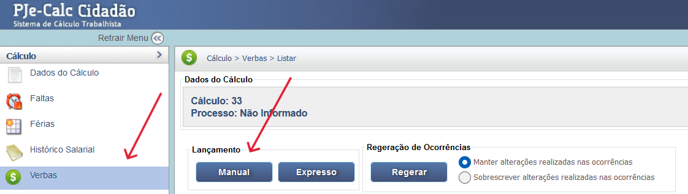
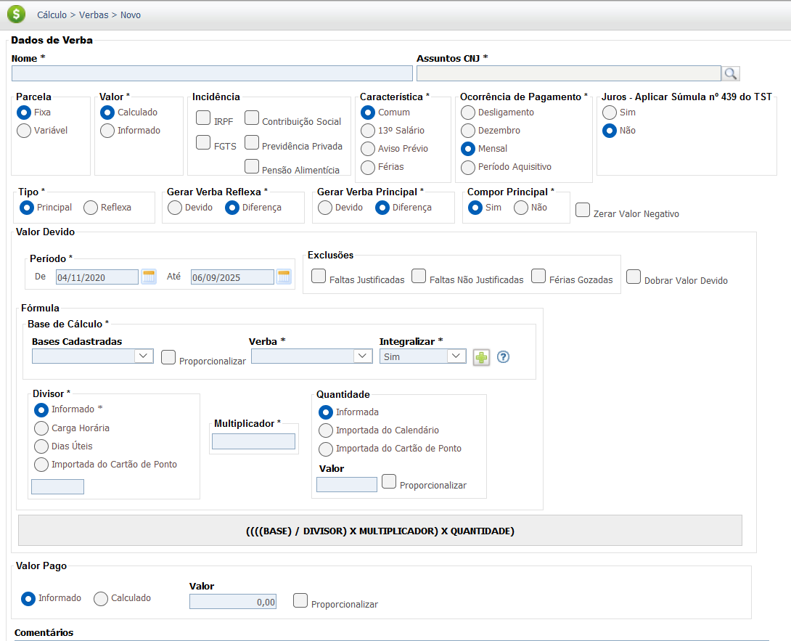
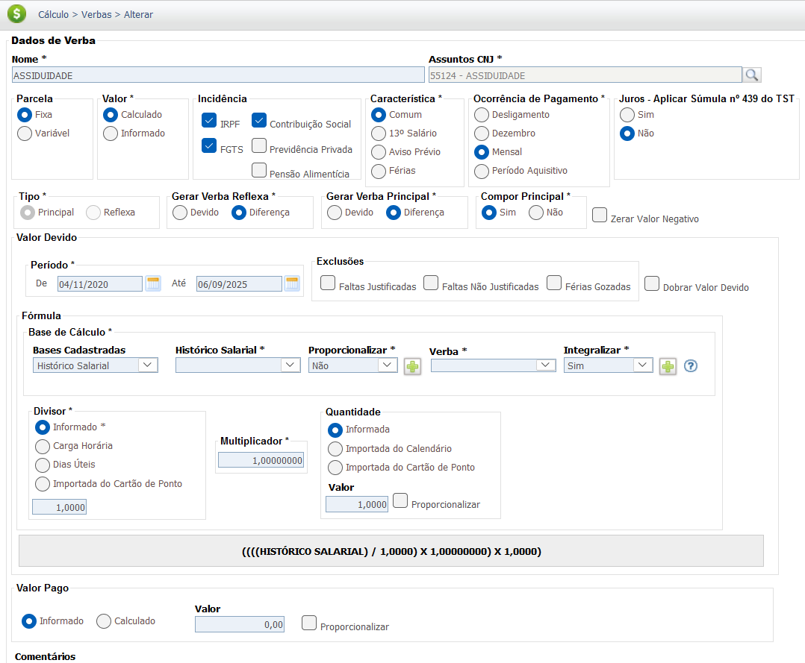
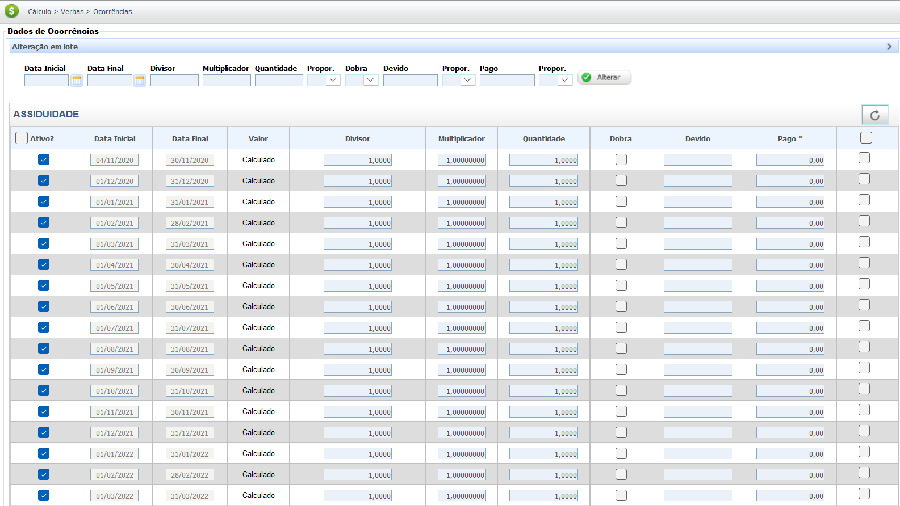

Gratificação por Assiduidade
A Gratificação por Assiduidade é um adicional salarial concedido ao empregado como incentivo e prêmio por sua pontualidade e ausência de faltas injustificadas no serviço durante um período determinado. Ela visa reconhecer e estimular a boa conduta do trabalhador.
A Gratificação por Assiduidade, assim como outras verbas criadas por negociação, geralmente é um direito estabelecido por meio de Convenções Coletivas de Trabalho (CCT), Acordos Coletivos (ACT) ou por Regulamento Interno da Empresa.
A natureza jurídica (salarial ou indenizatória) e a obrigatoriedade de integração à remuneração para fins de cálculo de outras verbas dependem da forma como ela é paga e do que a norma coletiva (CCT/ACT) ou o regulamento da empresa determinam. Em caso de habitualidade, a jurisprudência tende a reconhecer a natureza salarial.
Base Legal e Jurisprudência
O direito à Gratificação por Assiduidade deve ser buscado na CCT/ACT da categoria ou no
Regulamento da Empresa.
Fonte Normativa
Consolidação das Leis do Trabalho (CLT) - Regra Geral:
-
Artigo 457, § 1º:
Integram o salário a importância fixa estipulada, as gratificações legais e as comissões pagas pelo empregador."
-
Atenção:
A reforma trabalhista trouxe a possibilidade de cláusulas normativas definirem se a parcela tem natureza salarial ou indenizatória, mesmo que haja habitualidade, o que deve ser conferido.
Jurisprudência
A jurisprudência sobre Gratificação por Assiduidade é variável e depende da redação exata da norma coletiva que a instituiu. É fundamental verificar se a parcela é considerada prêmio ou salário.
"PRÊMIO. EXIGÊNCIA DE 'DESEMPENHO SUPERIOR AO ORDINARIAMENTE ESPERADO NO EXERCÍCIO DAS ATIVIDADES DO TRABALHADOR'. NATUREZA JURÍDICA SALARIAL SE O PAGAMENTO DECORRE DE CONDUTA NATURAL E NÃO EXTRAORDINÁRIA, COMO POR EXEMPLO PELA ASSIDUIDADE DO EMPREGADO NO SERVIÇO. No caso de pagamento de verba pela assiduidade do empregado, nítido o seu caráter salarial, pois a assiduidade é o que ordinariamente se espera do empregado, por se constituir inclusive em condição natural da própria relação de empreg1o." — (TRT da 12ª Região. Processo $\text{nº}$ 0000856-19.2020.5.12.0061. Publicação: 31/03/2021)
Base de Cálculo e Deduções
Base de Cálculo
O cálculo da Gratificação por Assiduidade é definido pela norma coletiva ou regulamento da empresa. Pode ser um valor fixo, um percentual sobre o salário-base ou vinculado à performance de assiduidade em um período (mensal, trimestral, anual).
Exemplo Simplificado de Cálculo (Valor Fixo):
Considerando um valor fixo mensal de R$ 100,00 para o empregado que não tiver nenhuma falta injustificada no mês.
- Condição Atendida: R$ 100,00
- Condição Não Atendida: R$ 0,00
Deduções
Se a Gratificação por Assiduidade tiver natureza salarial, ela integrará a base de cálculo para as deduções legais, como a contribuição para o INSS e o Imposto de Renda (IRPF). Se tiver natureza indenizatória e estiver em conformidade com o Art. 457, §§ 2º e 4º da CLT, não incidirá.
A verificação da natureza jurídica da Gratificação por Assiduidade é crucial para determinar a incidência de INSS e IRPF.
Verbas Reflexas
A Gratificação por Assiduidade somente gerará reflexos se tiver sido paga com habitualidade e se lhe for reconhecida a natureza salarial (Art. 457, § 1º, da CLT), ou se a norma coletiva que a criou determinar expressamente a sua integração. Caso a verba tenha natureza indenizatória, não haverá reflexos.
O valor a ser integrado será calculado pela média dos valores recebidos no período de apuração, se for variável.
| Verba Trabalhista | Possível Reflexo da Gratificação por Assiduidade |
|---|---|
| 13º Salário | Integra o cálculo do 13º Salário (integral e proporcional) pela média duodecimal (se habitual e salarial). |
| Férias + 1/3 | Integra o cálculo das Férias (vencidas e proporcionais) e o adicional de 1/3 pela média do período aquisitivo (se habitual e salarial). |
| Aviso Prévio | Integra a base de remuneração para cálculo do Aviso Prévio (trabalhado ou indenizado) pela média duodecimal (se habitual e salarial). |
| FGTS (Depósito Mensal e Multa) | Incide sobre o valor da gratificação (se salarial), compondo a base de cálculo para o depósito mensal de 8% e para a Multa de 40%. |
| Horas Extras | Incide sobre o valor da gratificação (se salarial), aumentando o salário-hora (Súmula 264 do TST). |
Importante: É indispensável a análise da CCT/ACT ou do regulamento da empresa para verificar a natureza jurídica da Gratificação por Assiduidade, pois a determinação de sua natureza indenizatória pode afastar a incidência de todos os reflexos acima listados.
Calculadora (Simulação)
Simule o cálculo da Gratificação por Assiduidade no mês com base na sua política de assiduidade. Regra Simples: Uma ou mais faltas injustificadas no período resultam na perda total do benefício.
Insira o valor integral previsto (geralmente por CCT/ACT).
Faltas justificadas (médicas, legais) não afetam o cálculo.
Lançamento no PJe-Calc
A seguir, confira o passo a passo para o lançamento da verba no PJe-Calc.
ATENÇÃO: Como a verba "Gratificação por Assiduidade" é uma verba que depende de parametrização específica da CCT/ACT, recomenda-se o cadastro via opção "Manual".
- Acessar Verbas e Escolher Lançamento: No menu de navegação à esquerda, clique na opção Verbas para iniciar o lançamento. Após o comando, será exibida a tela para escolha do Lançamento da Verba. Escolha a opção Manual. 
- Acessar o cadastro de configuação da Verba: O sistema exibirá a tela de parâmetros da verba com os campos em branco para preenchimento. Cadastre o nome da verba, por exemplo, "Gratificação por Assiduidade", e escolha entre os Assuntos CNJ a opção relativa ao novo cadastro. Preencha devidamente os demais parâmetros (em especial a natureza salarial/indenizatória) e ao final clique no botão Salvar. 
-
Quadro de Verbas e Ações: Após o cadastramento da
nova verba, o sistema exibirá um quadro
com os campos:
- Ações - contendo as opções de configurações da verba selecionada (parâmetros,
ocorrências e exclusão)

-
- Parâmetros da Verba

-
- Ocorrências da Verba

-
- Excluir

- Verba Principal - verba selecionada para lançamento (Gratificação por Assiduidade).
- Verba Reflexa - em que ao clicar no botão Exibir serão listadas todas as verbas reflexas ligadas a Verba Principal.
- Parametrização da Verba: Ao clicar no botão Parâmetros da Verba serão exibidas todas as configurações necessárias para a parametrização da Verba Principal. 
- Registro de Ocorrências: Ao clicar no botão Ocorrências da Verba serão exibidas todas as configurações necessárias para registro das ocorrências da Verba Principal. 